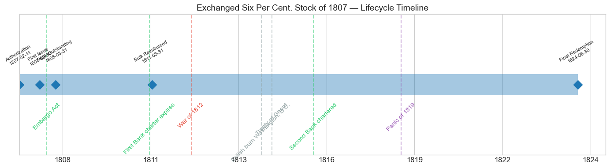
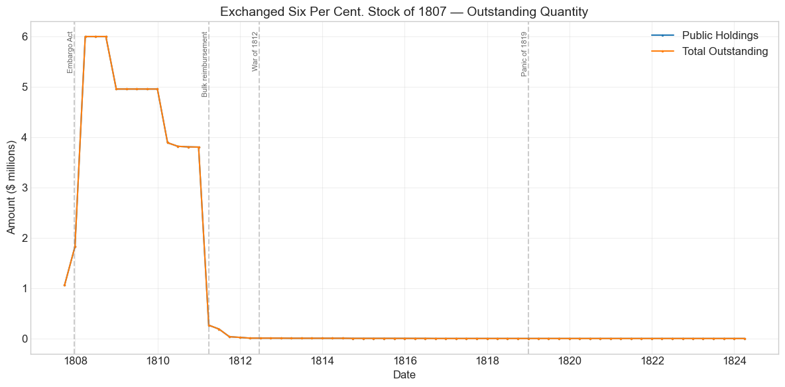
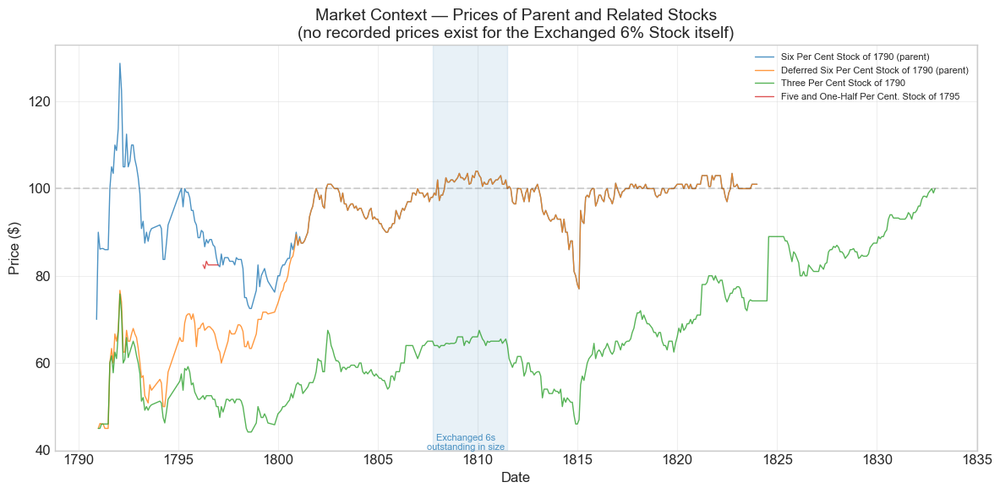

Bond Biography: Exchanged Six Per Cent. Stock of 1807#
Buying Back Flexibility: Gallatin’s Exchange of 1807#
An enhanced chapter from the Hall-Payne-Sargent US Federal Bond Database (2,857 issues, 1776–1960)
Bond ID (L1): 20045 | Category: Interest Bearing > Marketable > Long Term Bond
import pandas as pd
import numpy as np
import matplotlib.pyplot as plt
import matplotlib.patches as mpatches
import datetime
import warnings
warnings.filterwarnings('ignore')
plt.style.use('seaborn-v0_8-whitegrid')
plt.rcParams.update({'figure.figsize': (12, 6), 'font.size': 12,
'axes.titlesize': 14, 'axes.labelsize': 12})
# Load the bond database
store = pd.HDFStore('../data/BondDF.h5', mode='r')
BondList = store['BondList']
BondQuant = store['BondQuant']
BondPrice = store['BondPrice']
store.close()
BondQuant_T = BondQuant.transpose()
BondPrice_T = BondPrice.transpose()
bond_id = 20045
print(f'Loaded data for: Exchanged Six Per Cent. Stock of 1807 (ID: {bond_id})')
print(f'Database contains {len(BondList)} bond issues')
/Users/thomassargent/anaconda3/lib/python3.9/site-packages/pandas/core/arrays/masked.py:60: UserWarning: Pandas requires version '1.3.6' or newer of 'bottleneck' (version '1.3.5' currently installed).
from pandas.core import (
Loaded data for: Exchanged Six Per Cent. Stock of 1807 (ID: 20045)
Database contains 2857 bond issues
A Bond Born of a Bookkeeping Problem#
Most of the securities in this database were created to raise money. The Exchanged Six Per Cent. Stock of 1807 raised not a single dollar. It carried the same 6% coupon as the stock it replaced, was serviced from the same revenues, and was held, at first, by exactly the same people. What changed was one clause — the redemption clause — and that single clause is the whole story of this bond.
The problem it solved was of Alexander Hamilton’s making. The Six Per Cent Stock of 1790 (ID 20021) and its Deferred sibling (ID 20022) had been issued under the Funding Act with a deliberate straitjacket: the government pledged to pay no more than $8 per $100 of original principal per year, interest and principal combined. Since interest alone consumed $6, the Treasury could retire only about 2% of the principal a year, no matter how much money it had. In 1790 that limitation was a feature — a credible commitment that made the new stock attractive to investors who wanted a durable income stream. By 1807 it had become a bug. Thomas Jefferson’s administration had made debt extinction its central fiscal objective; Treasury Secretary Albert Gallatin had built the machinery to achieve it — above all the sinking fund reorganized by the Act of April 29, 1802, which appropriated $7.3 million annually (a figure later enlarged to $8 million) to interest and redemption of the public debt. Customs revenues were pouring in on the back of America’s neutral-carrier boom, and the debt was falling — from roughly $83 million in 1801 toward $45 million by 1812. But the old sixes, the government’s most expensive obligation, could only be nibbled at the contractual 2% pace. Gallatin, who had long criticized the 1790 redemption limitation for tying the Treasury’s hands, wanted the straitjacket off.
The Act of February 11, 1807 was his answer: a voluntary exchange offer. Holders of the old 6% and deferred stocks were invited to swap, dollar for dollar, into a new 6% stock — same coupon, same quarterly specie interest — but redeemable at the pleasure of the United States, upon public notice, free of the $8-per-$100 cap. No cash changed hands; no new debt was created. The government was, in effect, repurchasing an option it had sold in 1790. This chapter follows that quiet, technical, and remarkably successful operation — a window into the mechanics of Jeffersonian debt reduction, and a small classic of debt management in an era usually remembered for grander dramas.
The Exchange Offer and Its Option Economics#
Why would any holder tender? The exchange was, on its face, a strictly worse deal for the investor: surrender a 6% stream protected from rapid redemption, receive a 6% stream the government could extinguish at will. A holder who tendered was giving up, for free, precisely the call protection that let the old sixes trade above par whenever market yields dipped below 6%.
The economics were subtler than that, and they cut both ways:
The option was worth little if redemption at par was imminent anyway. With the old stock trading near par and the Treasury visibly determined to retire debt, the incremental value of slow-redemption protection had shrunk. A holder expecting to be reimbursed at 100 within a few years lost little by accepting a stock that would be reimbursed at 100 a little sooner.
Convenience and certainty. Reimbursement of the old stock proceeded in small annual slices, with the holder’s principal dribbling back over decades. The new stock promised a clean exit: full principal, in coin, on an announced date.
But holders who prized the annuity feature — many of them foreign investors accustomed to British consols — had every reason to decline, and many did. The exchange was voluntary, and take-up was partial: the database records a peak of $5.99 million of exchanged stock in March 1808, a modest fraction of the old 6% and deferred stock then outstanding. The remainder stayed in the old form until a second, similar offer during the War of 1812 (the Exchanged Six Per Cent. Stock of 1812), and the last balances were ground down under the original 1790 rules.
For the government the calculus was simple. Every dollar exchanged became redeemable on demand; surplus revenue that would otherwise have sat idle (or gone into open-market purchases at whatever price the market asked) could retire debt at par, at the Treasury’s chosen moment. The 1807 act also operated alongside a companion conversion of other funded stock recorded in the database as the Converted Six Per Cent. Stock of 1807 — a sibling piece of the same housecleaning. Together these operations mark the moment the United States began actively managing its debt structure rather than merely servicing it.
Historical Context#
The following major events occurred during this bond’s official lifetime:
Date |
Event |
Category |
|---|---|---|
1807-12-22 |
Embargo Act |
Legislation |
1811-03-03 |
First Bank charter expires |
Legislation |
1812-06-18 to 1815-02-18 |
War of 1812 |
War |
1814-08-24 |
British burn Washington, D.C. |
Other |
1814-12-24 |
Treaty of Ghent (War of 1812 ends) |
Other |
1816-04-10 |
Second Bank of the US chartered |
Legislation |
1819-01-01 to 1821-12-31 |
Panic of 1819 |
Crisis |
The table is somewhat deceptive. Although the database carries this issue to a final redemption date of June 30, 1824, the quantity series below shows that the exchanged stock was substantially extinguished by 1811–1812 — before the War of 1812 began, before the First Bank’s charter lapsed mattered to Treasury operations, and long before the Panic of 1819. Only a few thousand dollars of unclaimed balances lingered on the books through the war and the panic. The great events of 1812–1821 therefore left almost no imprint on this security; its life belongs instead to the quieter drama of 1807–1811:
The Embargo. Ten months after the exchange act, Jefferson’s Embargo Act (December 22, 1807) shut American ports in response to British and French depredations on neutral shipping. Customs revenue — the engine of Gallatin’s debt-reduction program — fell sharply in 1808–1809. Yet the Treasury had accumulated large balances during the boom years, and the redemption of the exchanged stock proceeded through the embargo and its aftermath essentially unimpeded. That the government kept retiring debt at par while its revenue base was being deliberately strangled is a measure of how much fiscal room Gallatin’s surpluses had created.
The reimbursement of 1808–1811. This is the event that actually shaped the bond, and it is visible in the data as a staircase of redemptions culminating in the near-total reimbursement of early 1811 — discussed in detail below. The exchanged stock did exactly what it was designed to do: it was created so that it could be destroyed, and it was destroyed quickly.
# Bond Lifecycle Timeline
fig, ax = plt.subplots(figsize=(14, 4))
# Key dates
dates = [('Authorization', '1807-02-11'), ('First Issue', '1807-09-30'), ('Peak Outstanding', '1808-03-31'), ('Bulk Reimbursed', '1811-03-31'), ('Final Redemption', '1824-06-30')]
events = [('Embargo Act', '1807-12-22', 'legislation'), ('First Bank charter expires', '1811-03-03', 'legislation'), ('War of 1812', '1812-06-18', 'war'), ('British burn Washington, D.C.', '1814-08-24', 'other'), ('Treaty of Ghent', '1814-12-24', 'other'), ('Second Bank chartered', '1816-04-10', 'legislation'), ('Panic of 1819', '1819-01-01', 'crisis')]
import matplotlib.dates as mdates
from datetime import datetime
# Plot bond lifetime bar
d0 = datetime.strptime(dates[0][1], '%Y-%m-%d')
d1 = datetime.strptime(dates[-1][1], '%Y-%m-%d')
ax.barh(0, (d1 - d0).days, left=mdates.date2num(d0), height=0.3,
color='#1f77b4', alpha=0.4, label='Bond Lifetime')
# Mark key dates
for label, date_str in dates:
d = datetime.strptime(date_str, '%Y-%m-%d')
ax.plot(mdates.date2num(d), 0, 'D', color='#1f77b4', markersize=10)
ax.annotate(f'{label}\n{date_str}', (mdates.date2num(d), 0.25),
ha='center', va='bottom', fontsize=8, rotation=30)
# Mark historical events
colors = {'war': '#e74c3c', 'crisis': '#9b59b6', 'legislation': '#2ecc71', 'other': '#95a5a6', 'monetary': '#f39c12'}
for name, date_str, cat in events:
d = datetime.strptime(date_str, '%Y-%m-%d')
ax.axvline(mdates.date2num(d), color=colors.get(cat, 'gray'), alpha=0.5, linestyle='--')
ax.annotate(name, (mdates.date2num(d), -0.25), ha='center', va='top',
fontsize=10, rotation=45, color=colors.get(cat, 'gray'))
ax.set_yticks([])
ax.xaxis.set_major_formatter(mdates.DateFormatter('%Y'))
ax.set_title('Exchanged Six Per Cent. Stock of 1807 — Lifecycle Timeline')
ax.set_ylim(-1, 1)
plt.tight_layout()
plt.show()

Bond Features#
Feature |
Detail |
|---|---|
Name |
Exchanged Six Per Cent. Stock of 1807 |
Authorizing Act |
February 11, 1807 |
First Issue Date |
September 30, 1807 |
Term |
Indefinite — no stated maturity |
Redemption |
At the pleasure of the United States, upon public notice — no annual reimbursement cap |
Final Redemption |
June 30, 1824 (last unclaimed balances; bulk reimbursed by 1811–1812) |
Coupon Rate |
6.0% per annum |
Payment Frequency |
Quarterly (4 times/year) |
Payable in Coin |
Yes |
Origin |
Issued at par in voluntary exchange for old Six Per Cent and Deferred Six Per Cent Stock of 1790 |
Peak Outstanding |
$5.99 million (March 31, 1808) |
Set beside the features of its parent (see the chapter on ID 20021), the contrast is exactly one line long: the 1790 stock was redeemable at no more than $8 per $100 per year, principal and interest combined; the 1807 stock was redeemable at pleasure. Everything else — coupon, frequency, specie payment, book-entry transferability — carried over unchanged. The “Price Sold” of 1.0 (par) in the database records an exchange at face value, not a cash sale.
# Display full bond features from database
row = BondList.loc[20045]
display_cols = [
"Treasury's Name Of Issue", 'Authorizing Act', 'Term Of Loan',
'First Issue Date', 'First Redemption Date', 'Final Redemption Date',
'Coupon Rate', 'Coupons Per Year', 'Callable', 'Coin',
'Authorized Amount', 'Price Sold'
]
print('Bond Features from Database:')
print('=' * 55)
for col in display_cols:
if col in row.index:
print(f' {col:<30} {row[col]}')
Bond Features from Database:
=======================================================
Treasury's Name Of Issue Exchanged Six Per Cent. Stock of 1807
Authorizing Act February 11, 1807
Term Of Loan indefinite
First Issue Date 1807-09-30 00:00:00
First Redemption Date 1807-09-30 00:00:00
Final Redemption Date 1824-06-30 00:00:00
Coupon Rate 6.0
Coupons Per Year 4.0
Callable 0.0
Coin 1.0
Authorized Amount nan
Price Sold 1.0
Bond Quantity Over Time#
The bond’s outstanding quantity peaked at $5.99 million on March 31, 1808. Quantity data span September 1807 to March 1824 (67 quarterly observations). The chart below is, for this security, the main event: with no meaningful price record (see below), the quantity series is the bond’s biography.
# Bond quantity over time
fig, ax = plt.subplots(figsize=(12, 6))
for stype in ['Public Holdings', 'Total Outstanding']:
try:
s = BondQuant_T.loc[(20045, stype)]
s = s[s.notna()]
if len(s) > 0:
ax.plot(s.index, s.values / 1e6, marker='.', markersize=3, linewidth=1.5, label=stype)
except KeyError:
pass
ax.set_title('Exchanged Six Per Cent. Stock of 1807 — Outstanding Quantity')
ax.set_xlabel('Date')
ax.set_ylabel('Amount ($ millions)')
ax.legend()
ax.grid(True, alpha=0.3)
events = {'1807-12-22': 'Embargo Act', '1811-03-31': 'Bulk reimbursement', '1812-06-18': 'War of 1812', '1819-01-01': 'Panic of 1819'}
for date_str, label in events.items():
d = pd.Timestamp(date_str)
ax.axvline(d, color='gray', alpha=0.4, linestyle='--')
ax.text(d, ax.get_ylim()[1]*0.97, label, rotation=90, va='top', ha='right', fontsize=8, alpha=0.7)
plt.tight_layout()
plt.show()

Quantity Analysis: Created to Be Destroyed#
The series traces a shape unlike any war loan’s — a fast rise and a faster, deliberate fall:
Subscription, 1807–1808. The stock appears at $1.06 million on September 30, 1807, grows to $1.83 million by year-end, and jumps to its peak of $5.99 million by March 31, 1808 as successive waves of old 6% and deferred stock were surrendered and re-registered. These jumps are administrative, not market events: each step records holders’ certificates passing through the Treasury’s books, and the roughly six-month window between the February 1807 act and the first recorded issue reflects the machinery of notice, subscription, and transfer. Roughly $6 million tendered, out of a much larger eligible mass, measures the partial appeal of the offer — enough to matter, far from universal.
Redemption, 1808–1811. Then the staircase turns down, and quickly. About $1.0 million was retired around the end of 1808 ($5.99M to $4.95M), another $1.1 million in early 1810 (to $3.89M), and then the decisive stroke: between December 1810 and March 1811 the outstanding stock collapses from $3.80 million to $0.27 million — a reimbursement of over 90% of the remaining principal in a single quarter — with the residue paid off through 1811 into early 1812. The timing is telling. The Treasury did not wait: the entire point of the exchange was to let surplus revenue retire 6% debt at par, and Gallatin’s Treasury exercised the option almost as fast as decency and cash balances allowed — through the embargo years, and finishing on the very eve of the war with Britain. Had the operation waited another eighteen months, the war would have made redemption unthinkable.
The long tail, 1812–1824. From 1812 onward the series shows only a few thousand dollars — declining in small irregular steps from $10,520 to a stubborn $3,565.14 that sits unchanged from 1818 to the final redemption date of June 30, 1824. This is bookkeeping, not finance: unclaimed balances belonging to holders who never presented their certificates for reimbursement. Interest on reimbursed stock ceased with the redemption notice, so these residues were dead claims awaiting collection; the 1824 terminal date marks the closing of the account, not a meaningful redemption event. Every long-lived issue of the era shows a similar tail.
There was no refinancing into other instruments: the exchanged stock was paid off in coin, extinguishing the debt outright. That, and not any rollover, was the program.
The Missing Market Record#
Here the standard biography of a bond — its price chart, its drawdowns, its yield history — cannot be written. The Hall-Payne-Sargent database contains no monthly price observations for the Exchanged Six Per Cent. Stock of 1807. The reasons are not mysterious. The issue was modest ($6 million at peak), it existed in size for barely four years, its holders were largely investors awaiting reimbursement rather than traders, and contemporary price currents typically quoted “6 per cents” as a class — quotations that attach in this database to the parent Six Per Cent Stock of 1790 (382 monthly observations) rather than to the exchanged variant. We state this plainly rather than paper over it: for this bond, the market record is effectively silent.
What we can say is indirect but not empty. Because the exchanged stock differed from the old sixes only in its redemption clause, arbitrage confines its price to a narrow corridor: it could not have been worth more than the parent stock (it carried strictly weaker call protection), and so long as reimbursement at par was expected promptly, it could not have traded far below par either — a claim on $100 in coin within a few years, paying 6% quarterly in the meantime, prices close to $100 in any sane market. The parent 6s themselves hovered near par through 1807–1811 (see the chapter on ID 20021), bracketing the exchanged stock’s unobserved value from above. The interesting price history of this episode is really embedded in the parent security: the old sixes’ ability to hold above par was precisely the option value that non-tendering holders refused to surrender — and that tendering holders gave up.
The chart below therefore shows the exchanged stock’s market context — the recorded prices of its parent and sibling stocks over the same years — rather than a price series of its own. (The plotting code checks for this bond’s prices and finds none.)
# Market context: prices of the parent and sibling stocks
# (This bond itself has no price observations in the database — the code checks and reports.)
fig, ax = plt.subplots(figsize=(12, 6))
p = BondPrice_T.loc[(20045, 'Average')]
p = pd.to_numeric(p, errors='coerce').dropna()
print(f'Price observations for ID 20045 (Exchanged 6% Stock of 1807): {len(p)}')
if len(p) > 0:
ax.plot(p.index, p.values, linewidth=2, label='Exchanged Six Per Cent. Stock (this bond)')
# Related bonds
related_ids = [20021, 20022, 20023, 20036]
related_names = ['Six Per Cent Stock of 1790 (parent)', 'Deferred Six Per Cent Stock of 1790 (parent)',
'Three Per Cent Stock of 1790', 'Five and One-Half Per Cent. Stock of 1795']
for rid, rname in zip(related_ids, related_names):
try:
s = BondPrice_T.loc[(rid, 'Average')]
s = pd.to_numeric(s, errors='coerce').dropna()
if len(s) > 0:
ax.plot(s.index, s.values, linewidth=1, alpha=0.8, label=rname)
except KeyError:
pass
# Shade the window in which the exchanged stock was outstanding in size
ax.axvspan(pd.Timestamp('1807-09-30'), pd.Timestamp('1811-06-30'), alpha=0.10, color='#1f77b4')
ax.text(pd.Timestamp('1809-06-01'), 40, 'Exchanged 6s\noutstanding in size', fontsize=8,
color='#1f77b4', ha='center', alpha=0.8)
ax.axhline(100, color='black', alpha=0.15, linestyle='--')
ax.set_title('Market Context — Prices of Parent and Related Stocks\n(no recorded prices exist for the Exchanged 6% Stock itself)')
ax.set_xlabel('Date')
ax.set_ylabel('Price ($)')
ax.legend(fontsize=8, loc='best')
ax.grid(True, alpha=0.3)
plt.tight_layout()
plt.show()
Price observations for ID 20045 (Exchanged 6% Stock of 1807): 0

Reading the context chart: through the shaded 1807–1811 window in which the exchanged stock existed in size, the parent 6s and deferred 6s traded in the neighborhood of par — quiet years for federal credit, between the Quasi-War alarm of 1798 and the wartime sag after 1812. Whatever the exchanged stock’s unrecorded price was, it lived inside that placid corridor. The divergences visible elsewhere in the chart — the 3s at half of par, the wartime dip after 1812 — belong to coupon arithmetic and to a war this bond, by design, did not live to finance.
Issuance, Distribution, and Redemption#
How it was placed. There was no sale, no underwriter, and no offering price. The “Price Sold” of 1.0 in the database records an exchange at face value: a holder of old 6% or deferred stock presented certificates at the Treasury or a loan office, the old stock was cancelled, and new exchanged stock for the same principal was entered on the books. Issuance was therefore demand-driven — its pace set by holders’ decisions to tender, which is why the outstanding amount builds in waves between September 1807 and March 1808 rather than appearing at once.
Who held it. By construction, the initial holders were a self-selected subset of the old stock’s owners — banks, insurance companies, trustees, merchants, and individual investors, domestic and foreign. Self-selection likely mattered: holders who prized the old stock’s annuity-like protection (a preference often attributed to European investors) had the least reason to tender, while holders content to be paid off at par had the most. The database does not record the composition of tendering holders, and we do not guess at it beyond this logic.
How it ended. In coin, at par, and fast. The Treasury reimbursed roughly $1 million around the close of 1808, a similar slice in early 1810, and the great bulk — over $3.5 million — around the first quarter of 1811, with small residues cleaned up through 1812. Reimbursement was effected by public notice, after which interest ceased and holders presented certificates for payment. The trailing $3,565.14 of unclaimed balances that sits in the data from 1818 until the terminal date of June 30, 1824 is the archival shadow of holders who never showed up. In under five years, an instrument that had taken an act of Congress to create had done its work and vanished — precisely the outcome its designers intended.
Implications and Legacy#
The first deliberate liability-management operation of the United States. Hamilton’s funding of 1790 converted chaotic debts into orderly ones; Gallatin’s exchange of 1807 went a step further and re-contracted orderly debt to change its terms. The technique — offer holders a voluntary swap that alters redemption features while leaving the coupon untouched — is the direct ancestor of the conversion and refunding operations that run through the rest of American debt history: the refundings of the 1870s under the Acts of 1870–71, the Liberty Loan conversions of 1917–18, and the routine exchange offers of the modern Treasury. The 1807 operation demonstrated the essential trick: a sovereign that cannot compel its creditors can still restructure, if it makes tendering individually rational.
A lesson in the price of commitment. Read jointly with its parent, the exchanged stock closes a thirty-year arc in contract design. In 1790 the government bought credibility by promising not to redeem quickly — a promise that helped carry the sixes from $70 to par. By 1807 credibility was established, the promise had become an expensive relic, and the government had to buy back its flexibility — patiently, voluntarily, and only from the fraction of holders willing to sell it. The episode is an unusually clean historical illustration of the proposition that commitment devices have both a value and a cost, and that the two are paid at different times.
A milestone on the road to zero. The redemption of the exchanged stock in 1808–1811 was one of the visible fruits of the Jeffersonian program that cut the federal debt from about $83 million in 1801 to about $45 million by 1812 — even while absorbing the $11.25 million Louisiana Purchase. The War of 1812 undid that consolidation, roughly tripling the debt; but the machinery and the political commitment survived, and the postwar surpluses ran the same playbook on a larger scale until, in January 1835 under Andrew Jackson, the United States extinguished its national debt entirely — the only major nation ever to do so. The exchanged sixes of 1807 were an early, technical, almost invisible step in that arc from Hamilton’s funding to Jackson’s zero. Bonds like this one rarely get monuments. They are how debts actually die.
What the missing prices teach. Finally, the bond is a useful reminder of what a database can and cannot see. An issue can be historically consequential and still leave no market trace: the exchanged stock’s significance lay in its contract and its quantity path, both fully visible in the data, while its price — pinned near par by arbitrage with its parent and by imminent redemption — was too unremarkable, and its float too small and short-lived, for contemporary price currents to record. Not every important security has an exciting price chart; some of the most successful ones have none at all.
References#
Primary Sources#
U.S. Congress, Act of February 11, 1807, 2 Stat. 415 (authorizing the exchange of old six per cent and deferred stock for new stock redeemable at the pleasure of the United States).
U.S. Congress, Act of April 29, 1802 (the reorganized sinking fund, with its $7.3 million annual appropriation for interest and redemption of the public debt).
U.S. Congress, An Act making provision for the (payment of the) Debt of the United States (the Funding Act), August 4, 1790, 1 Stat. 138 (source of the $8-per-$100 redemption limitation on the parent stock).
Gallatin, A., annual reports of the Secretary of the Treasury and reports of the Commissioners of the Sinking Fund, 1801–1813.
Scholarly Works#
Garber, P. M. (1991). “Alexander Hamilton’s Market-Based Debt Reduction Plan.” Carnegie-Rochester Conference Series on Public Policy 35: 79–104.
Hall, G. J. & Sargent, T. J. (2014). “Fiscal Discriminations in Three Wars.” Journal of Monetary Economics 61: 148–166.
Hall, G. J. & Sargent, T. J. (2018). “Brief History of US Debt Limits Before 1939.” Proceedings of the National Academy of Sciences 115(12): 2942–2945.
Payne, J., Szőke, B., Hall, G. & Sargent, T. (2025). Quarterly Journal of Economics.
General Histories#
Bayley, R. A. (1881). The National Loans of the United States, From July 4, 1776 to June 30, 1880. Washington: Government Printing Office.
Dewey, D. R. (1918). Financial History of the United States. New York: Longmans, Green and Co.
Studenski, P. & Krooss, H. E. (1952). Financial History of the United States. New York: McGraw-Hill.
Perkins, E. (1994). American Public Finance and Financial Services, 1700–1815. Columbus: Ohio State University Press.
Enhanced Bond Biography generated from the Hall-Payne-Sargent Bond Database. Narrative enrichment draws on Bayley (1881), Dewey (1918), Studenski & Krooss (1952), and Perkins (1994). See the companion chapter on the Six Per Cent Stock of 1790 (ID 20021) for the parent security’s full price history and the political origins of the redemption limitation this bond was created to escape.